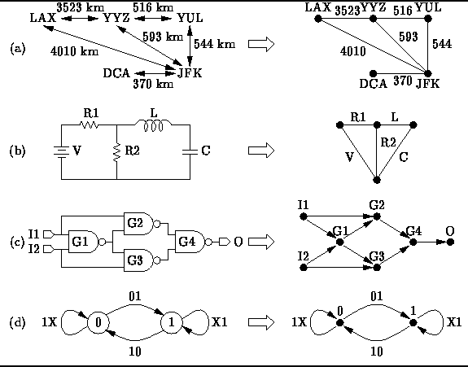

Data Structures and Algorithms
with Object-Oriented Design Patterns in Java
Data Structures and Algorithms
with Object-Oriented Design Patterns in JavaA graph is simply a set of points together with a set of lines connecting various points. Myriad real-world application problems can be reduced to problems on graphs.
Suppose you are planning a trip by airplane.
From a map you have determined the distances between the airports
in the various cities that you wish to visit.
The information you have gathered can be represented using a graph
as shown in Figure  (a).
The points in the graph represent the cities
and the lines represent the distances between them.
Given such a graph, you can answer questions such as
``What is the shortest distance between LAX and JFK?''
or ``What is the shortest route that visits all of the cities?''
(a).
The points in the graph represent the cities
and the lines represent the distances between them.
Given such a graph, you can answer questions such as
``What is the shortest distance between LAX and JFK?''
or ``What is the shortest route that visits all of the cities?''

Figure: Real-world examples of graphs.
An electric circuit can also be viewed
as a graph as shown in Figure (b).
In this case the points in the graph
indicate where the components are connected (i.e., the wires)
and the lines represent the components themselves
(e.g, resistors and capacitors).
Given such a graph, we can answer questions such as
``What are the mesh equations that describe the circuit's behavior?''
Similarly, a logic circuit can be reduced to a graph
as shown in Figure (c).
In this case the logic gates are represented by the points
and arrows represent the signal flows from gate outputs to gate inputs.
Given such a graph, we can answer questions such as
``How long does it take for the signals to propagate from the inputs
to the outputs?''
or ``Which gates are on the critical path?''
Finally, Figure (d) illustrates that a graph can be used
to represent a finite state machine.
The points of the graph represent the states
and labeled arrows indicate the allowable state transitions.
Given such a graph, we can answer questions such as
``Are all the states reachable?''
or ``Can the finite state machine deadlock?''
This chapter is a brief introduction to the body of knowledge known as graph theory . It covers the most common data structures for the representation of graphs and introduces some fundamental graph algorithms.
 Copyright © 1998 by Bruno R. Preiss, P.Eng. All rights reserved.
Copyright © 1998 by Bruno R. Preiss, P.Eng. All rights reserved.